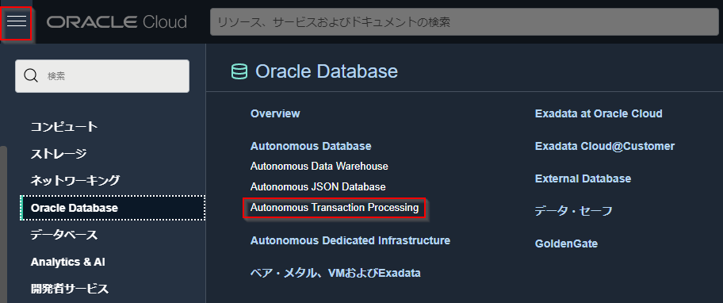

ATPのプロビジョニングとATP接続情報の作成¶
このステップでは、OCIコンソールからATPをプロビジョニングし、OKEから接続するための事前準備を行います。
以下手順で実行します。
- OCIコンソールからATPをプロビジョニングする
- OCI CLIコマンドを利用してWalletファイルを作成し、ConfigmapリソースとしてOKEに登録する
- ATP接続情報としてユーザ名とパスワードを作成し、SecretリソースとしてOKEに登録する
1. OCIコンソールからATPをプロビジョニングする¶
ここでは、OCIコンソールからATPのプロビジョニングを行います。
OCIコンソールにログインし、ハンバーガーメニューから"Autonomous Tsanraction Processing"をクリックします。

"Autonomous Databaseの作成"ボタンをクリックします。
以下の情報を入力します。
-
コンパートメント：ルートコンパートメント
-
表示名：OCIコンソール上でATPを表示するための名前を入力します。今回は"tfOKEATPDB"
-
データベース名：データベース名を入力します。今回は"tfOKEATPDB"
注意事項: トライアル環境以外の環境をお使いの方へ
Autonomous Databaseはデータベース名の重複が許容されていません。 集合ハンズオンなど同一の環境でハンズオンを実施されている方は、データベース名が重複しない様に語尾に任意の文字列(名前のイニシャル等)を追加するなどして重複しない名前にしてください。
-
ワークロード・タイプの選択：ワークロードをデータウェアハウスとするかトランザクション処理とするかを選択します。今回は"トランザクション処理"
-
デプロイメント・タイプの選択：データベースのインフラストラクチャを共有とするか専用とするかを選択します。今回は"共有インフラストラクチャ"
-
データベース・バージョンの選択：データベースのバージョンを選択します。今回は"19c"を選択
-
OCPU数：データベースのコア数を入力します。今回は"1"を入力
-
ストレージ(TB)：データベースのストレージ容量を入力します。今回は"1"を入力
-
自動スケーリング：ワークロードの負荷に応じて自動でスケールを行うかどうかを選択します。今回はチェックを入れます。
-
パスワード：データベースのパスワードを入力します。今回は"TFWorkshop__2000"
-
パスワードの確認：確認のためにパスワードを再度入力します。今回は"TFWorkshop__2000"
-
ネットワーク・アクセスの選択：データベースに対してどこからのアクセスを許可するかを選択します。今回は"すべての場所からのセキュア・アクセスを許可"を選択
-
ライセンス・タイプの選択：ライセンスのタイプを選択します。今回は"ライセンス込み"を選択
上記を入力し終えたら、"Autonomous Databaseの作成"をクリックします。
ATPのプロビジョニングが開始されます。ステータスが"使用可能"になればプロビジョニング完了です。完了するまで10-15分程度かかることがあります。
最後にプロビジョニングしたATPのOCIDを確認しておきます。(このOCIDは次の手順で使用します)
"Autonomous Database情報"の"OCID"の"コピー"ボタンをクリックし、OCIDをコピーします。
これで、ATPのプロビジョニングは完了です。
2. ATPのWalletファイルの作成¶
ATPに接続するため資格情報となるWalletファイルを作成します。
注意事項: Walletファイルについて
Walletファイルについてはマニュアルをご確認ください。 なお、Walletファイルはzipファイルです。
ハンズオン共通手順で作成したコンピュートインスタンスにログインします。
oke_atp_workshopディレクトリに移動します。
cd oke_atp_workshop
以下のコマンドを実行します。
oci db autonomous-database generate-wallet --autonomous-database-id [ATPのOCID] --password [Walletのパスワード] --file [Walletファイル名]
今回は以下のように実行します。[ATPのOCID]は、1. OCIコンソールからATPをプロビジョニングするでコピーしたATPのOCIDに書き換えてください。
oci db autonomous-database generate-wallet --autonomous-database-id [ATPのOCID] --password TFWorkshop__2000 --file Wallet_tfOKEATPDB.zip
カレントディレクトリにWalletファイルが作成されます。
以下のコマンドで解凍します。
unzip Wallet_tfOKEATPDB.zip -d Wallet_tfOKEATPDB
OKEにでデプロイするアプリケーションからWalletファイルを読み込むために解凍したディレクトリをKubernetesをConfigmapリソースとして登録します。
Note
Configmapリソースについてはこちらをご確認ください。
kubectl create configmap okeatp --from-file=Wallet_tfOKEATPDB
後続の手順で、Visual Builder Studioからサンプルデータを登録するためにWalletファイルをVisual Builder StudioのGitレポジトリに登録します。
git add Wallet_tfOKEATPDB.zip
git commit -m "Walletファイルの追加"
Note
コミットする際に以下のようなメッセージが表示されることがあります。
*** Please tell me who you are.
Run
git config --global user.email "you@example.com"
git config --global user.name "Your Name"
to set your account's default identity.
Omit --global to set the identity only in this repository.
その場合は以下のコマンドを実行後に再度コミットを行ってください。
git config --global user.email <自身のメールアドレス>
git config --global user.name <ユーザ名(任意)>
git push
3.ATPのユーザの作成¶
1. OCIコンソールからATPをプロビジョニングするでは、デフォルトユーザとして"Admin"ユーザでデータベースが作成されます。
ほとんどの場合、アプリケーションがデータベースを利用する際は"Admin"ではなく、別ユーザを作成します。
今回も同様に、ATPを利用するためのデータベースユーザを作成しましょう。
今回のハンズオンでは、ATPのユーザとパスワードを環境変数としてアプリケーションに読み込ませるように設定しています。
ここでは、ATPのユーザとパスワードを環境変数として作成するためにSecretリソースを作成します。
Note
Secretリソースについてはこちらをご確認ください。
今回は、ATPのユーザを"handson"、パスワードを"Welcome12345"として作成します。
kubectl create secret generic customized-db-cred \
--from-literal=user_name=handson \
--from-literal=password=Welcome12345
以上で、ATPのユーザとパスワードの設定は完了です。
続いてATPへのサンプルデータ登録に進んでください。